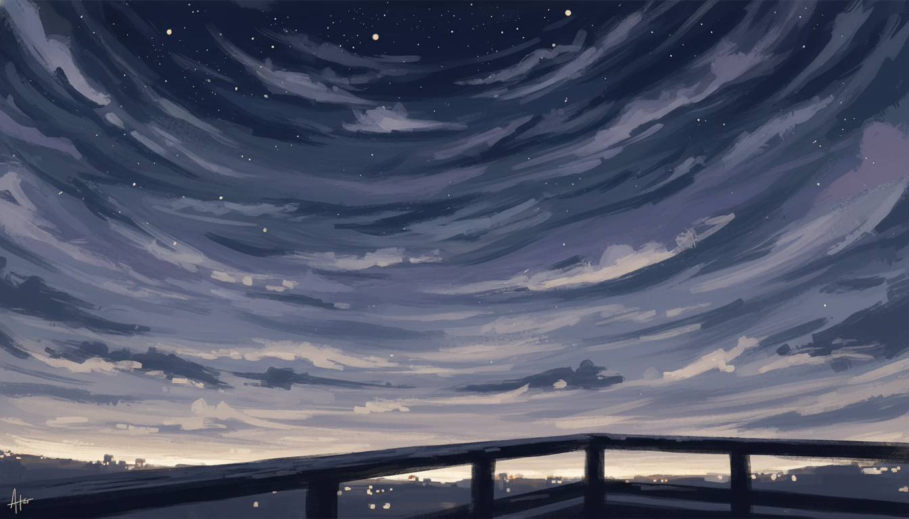

「方向転換」という言葉が、焦りの逃げ場として出てきた昼

SNSで他人の成功話を読んだ昼に、焦りが来た
5月16日の昼、SNSを開いた。 特定の誰かを探していたわけじゃなかった。 スクロールしていただけだった。
副業で月に何百万、独立してすぐ案件で埋まった、ローンチで完売、というような話が並んでいた。 具体的な数字が並んでいた。 その下にスクショや、それを称賛するリプライがついていた。
読みながら、胸の真ん中のあたりが少し縮んだ感じがした。 背中の上のほうにも、薄い緊張が走った。 スマホを置いたあとも、その感じが10分くらい残った。
このままの方向でいいんだろうか、と思った。 ひだまりも、もやログも、りぴメモも、AkariLabのnoteも、SNSも、毎日少しずつ動かしている。 動かしているけれど、月単位で見るとお金にはなっていない。 それを「在り方と一致する道を選んでいる」と書いたのが、つい6日前の日記だった。
その自分の言葉が、急に薄っぺらく感じた。
「方向転換」という言葉が、逃げ場として出てきた
頭の中に、「方向転換」という言葉が浮かんだ。 今の方向じゃない、別のやり方に切り替えたほうがいいんじゃないか。 もっとお金に直結する売り方をしたほうがいいんじゃないか。 SNSで見たような派手な売り方を、自分もやったほうがいいんじゃないか。
そう浮かんだ瞬間、自分の中で違和感が立った。
中身がない、と思った。 「別のやり方」の中身が、自分の中にひとつもなかった。 具体的に何を変えるのか、誰にどう届けるのか、それで何が良くなるのか、何ひとつ言えなかった。 ただ「今の方向のままだとまずい気がする」という焦りだけが先にあって、その器として「方向転換」という言葉を出してきていた。
これは方向転換じゃない、と気づいた。 焦りの逃げ場だった。 今の方向の重さから一瞬だけ目を逸らすための、便利な言葉を自分が借りてきていた。
そのあと、もう少し正直に書いた。 たぶん、今ほしかったのは方向を変えることではなかった。 少なくとも、この日の自分には、今のやり方の中に少し息をつける場所が必要だった。 他人の成功話を見て、自分の足元を比較で否定する時間を、置く場所がなかった。 だから、入ってきた焦りがそのまま「方向転換」に流れ込もうとしていた。
夜空を見上げるところまで、戻した
その日の夜、外に出た。 最小行動として、夜空を見上げる、とだけ自分に課した。 方向を変えるとか、明日からこうする、とか、何も決めなかった。
空を見上げた。 雲は薄くて、星はぽつぽつだけ見えた。 首の後ろが、SNSを見ていたときと違う方向に伸びた感じがした。 3分くらい立っていた。
戻ってきて、日記にこう書いた。 「方向転換」の中身がまだない=焦りの逃げ場になりがち。 「余白が大切」と書いたけれど、それは大きく舵を切る話とは少し違う気がした。 今やっていることを全部やめるんじゃなくて、その中に一拍置く場所を作る、くらいのことだった。
書き終えたあと、胸の縮みはまだ少し残っていた。 焦りは消えなかった。 ただ、焦りに「方向転換」という看板を貼ろうとしていた手は、いったん下ろせた。
20代初期で出会った、兄の空手道場関係者たち
ここで、ずいぶん前の話を思い出した。
20代に入ったばかりの頃、兄を介して何人かの大人と知り合った。 兄が通っていた空手道場の関係者で、当時の自分から見るとずっと年上の人たちだった。 今でも頭の中で「メンター」と呼んでいるのは、その人たちのことだ。
その人たちが、自分に言っていたことがある。 生き方、考え方、楽しいところ、ワクワクするところに人が集まるよ、と。 頭で考えて方向を決めるよりも先に、行動することの大切さを、何度も言われた。 言われた当時の自分は、その意味を半分くらいしか分かっていなかったと思う。
ただ、その人たちのことを、自分は今もはっきり尊敬している。 理由のひとつは、その人たちが自分の兄を育ててくれた人たちだからだ。 自分にとっての兄は、子どもの頃からずっと尊敬してきた相手で、そう思える兄を、その人たちが背中で形にしてきた、という感覚が残っている。 だから、その人たちが言っていたことは、今でも自分の中で「軽い言葉」にはならない。
あのときの教えは、方向を決める話じゃなかった
5月16日の昼、SNSの数字を見て焦った自分の頭に、「方向転換」という言葉が浮かんだ。 別の方向に切り替えたほうがいいんじゃないか、という言葉だった。
そこで、20代の自分がメンターたちから言われていた言葉と、つながった。 あの人たちは、「方向を決めろ」とは、あまり言わなかった。 「どこを目指せ」とも、「何屋になれ」とも、言われた記憶があまりない。 言われたのは、生き方や考え方の話と、楽しいところに人が集まるという話と、まず行動することの話だった。
つまり、方向そのものを変える話じゃなかった。 今、自分がいる場所で、生き方の温度を上げているか、楽しんでいるか、動いているか、という話だった。
5月16日の自分が焦ったのは、たぶん、方向の話ではなかった。 他人の派手な数字を見て、自分の足元の温度が下がっていることに気づいた、という話だった。 そこに「方向転換」という看板を貼ろうとしていたけれど、看板を取ったあとに残っていたのは、「楽しいところに人が集まる」と教わったあの言葉のほうだった。
ひだまりも、もやログも、りぴメモも、AkariLabのnoteも、自分にとっては「楽しい」と「ワクワク」の側にある作業だ。 お金にはまだなっていない。 でも、20代の自分が浴びた教えのほうに照らすと、方向を変える理由は出てこなかった。 たぶん、今日の自分に必要だったのは、自分の温度を少しだけ戻すことだった。
焦りは消えないまま、今日も同じ作業を続ける
5月16日の話に戻る。
夜空を見上げて家に戻ったあと、自分にひとつだけ確認した。 明日、今と同じ作業を続けるかどうか。 ひだまりを少しだけ触る、もやログの投稿を見る、AkariLabのnoteを書く、それを明日もやるかどうか。
やる、と書いた。 SNSで見た数字とは関係なく、自分の今日の作業はそのまま続ける。 ただ、その中に、夜空を見上げる時間を入れる。 他人の成功話を読まない時間を、5分でいいから挟む。
それが、自分にとっての「余白」だった。 方向を大きく変えたつもりはなかった。今の作業の横にできた、小さな隙間だった。
焦りはまだ消えていない。 明日もまたSNSを開いて、別の数字を見て、胸の真ん中が縮むかもしれない。 そのときに「方向転換」という言葉が浮かんだら、たぶん自分はもう一度同じことを確認する。 中身があるか、ないか。 中身がないなら、それは焦りの逃げ場だ。
そう書いて、日記を閉じた。
#日記 #ジャーナリング #エッセイ #note #毎日note #毎日更新 #続けること #内省 #自己観察 #気づき #書く #ひとりごと #ライフログ #雑記 #思考整理 #感情整理 #自分メモ #ものづくり #創作 #物書き #40代 #40代の生き方 #個人開発 #ひとり起業 #会社員 #サラリーマン #フリーランス #副業 #店長 #マネジメント #組織 #店舗運営 #人を育てる #対話 #コミュニケーション #人間関係 #家族 #子育て #メンター #上司部下 #生き方 #価値観 #誠実 #迷い #選択 #決断 #覚悟 #待つ #観察 #自己理解 #自己一致 #習慣 #瞑想 #ジム #運動 #読書 #執筆 #朝の時間 #夜の時間 #五月 #初夏 #福岡 #九州 #心の動き #日常 #暮らし #淡々 #小さな気づき #AI #AkariLab #SNS疲れ #比較 #焦り #収益化への焦り #月収 #独立 #自己肯定感 #夜空 #見上げる #最小行動 #二十代初期 #兄 #空手道場 #メンターたち #行動の大切さ #楽しいところに人が集まる #ワクワク #温度 #足元 #サイト運営 #方向転換 #中身がない #焦りの逃げ場 #看板を下ろす #余白 #今の中の隙間 #五分の余白 #五月十六日 #深夜のSNS #比較からの離脱